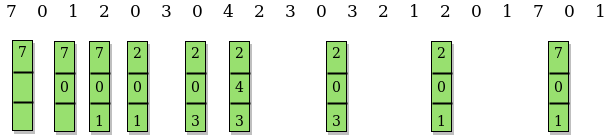

先决条件： 页面替换算法
在操作系统中，每当引用新页面而不存在于内存中时，就会发生页面错误，操作系统会用新需要的页面替换其中一个现有页面。 不同的页面替换算法提出了决定替换哪个页面的不同方法。 所有算法的目标是减少页面错误的数量。
在此算法中，OS将替换将来未使用最长时间的页面。
例子 ：
Input : Number of frames, fn = 3 Reference String, pg[] = {7, 0, 1, 2, 0, 3, 0, 4, 2, 3, 0, 3, 2, 1, 2, 0, 1, 7, 0, 1}; Output : No. of hits = 11 No. of misses = 9 Input : Number of frames, fn = 4 Reference String, pg[] = {7, 0, 1, 2, 0, 3, 0, 4, 2, 3, 0, 3, 2}; Output : No. of hits = 7 No. of misses = 6
这个想法很简单，对于我们做的每一个参考：
- 如果已经存在引用页面，则增加命中计数。
- 如果不存在，请查找以后从未引用的页面。 如果存在此类页面，请将此页面替换为新页面。 如果不存在此类页面，请查找将来最远引用的页面。 用新页面替换此页面。

// CPP program to demonstrate optimal page
// replacement algorithm.
#include <bits/stdc++.h>
using namespace std;
// Function to check whether a page exists
// in a frame or not
bool search(int key, vector<int>& fr)
{
for (int i = 0; i < fr.size(); i++)
if (fr[i] == key)
return true;
return false;
}
// Function to find the frame that will not be used
// recently in future after given index in pg[0..pn-1]
int predict(int pg[], vector<int>& fr, int pn, int index)
{
// Store the index of pages which are going
// to be used recently in future
int res = -1, farthest = index;
for (int i = 0; i < fr.size(); i++) {
int j;
for (j = index; j < pn; j++) {
if (fr[i] == pg[j]) {
if (j > farthest) {
farthest = j;
res = i;
}
break;
}
}
// If a page is never referenced in future,
// return it.
if (j == pn)
return i;
}
// If all of the frames were not in future,
// return any of them, we return 0. Otherwise
// we return res.
return (res == -1) ? 0 : res;
}
void optimalPage(int pg[], int pn, int fn)
{
// Create an array for given number of
// frames and initialize it as empty.
vector<int> fr;
// Traverse through page reference array
// and check for miss and hit.
int hit = 0;
for (int i = 0; i < pn; i++) {
// Page found in a frame : HIT
if (search(pg[i], fr)) {
hit++;
continue;
}
// Page not found in a frame : MISS
// If there is space available in frames.
if (fr.size() < fn)
fr.push_back(pg[i]);
// Find the page to be replaced.
else {
int j = predict(pg, fr, pn, i + 1);
fr[j] = pg[i];
}
}
cout << "No. of hits = " << hit << endl;
cout << "No. of misses = " << pn - hit << endl;
}
// Driver Function
int main()
{
int pg[] = { 7, 0, 1, 2, 0, 3, 0, 4, 2, 3, 0, 3, 2 };
int pn = sizeof(pg) / sizeof(pg[0]);
int fn = 4;
optimalPage(pg, pn, fn);
return 0;
}
输出：
No. of hits = 7 No. of misses = 6
- 可以使用散列来优化上述实现。 我们可以使用unordered_set代替向量，以便可以在O（1）时间内完成搜索操作。
- 请注意，最佳页面替换算法不实用，因为我们无法预测未来。 但是，它用作其他页面替换算法的参考。